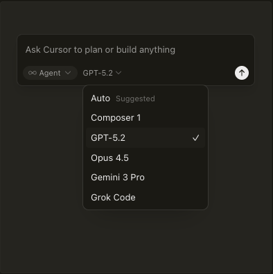
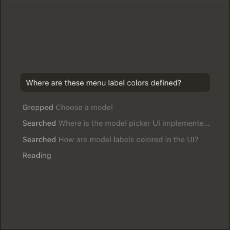

Agents turn ideas into code
Accelerate development by handing off tasks to Cursor, while you focus on making decisions.
Learn about agentic development →


Accelerate development by handing off tasks to Cursor, while you focus on making decisions.
Learn about agentic development →
Our specialized Tab model predicts your next action with striking speed and precision.
Learn about Tab →Cursor reviews your PRs in GitHub, collaborates in Slack, and runs in your terminal.
Learn about Cursor's surfaces →
“It was night and day from one batch to another, adoption went from single digits to over 80%. It just spread like wildfire, all the best builders were using Cursor.”
“My favorite enterprise AI service is Cursor. Every one of our engineers, some 40,000, are now assisted by AI and our productivity has gone up incredibly.”
“The best LLM applications have an autonomy slider: you control how much independence to give the AI. In Cursor, you can do Tab completion, Cmd+K for targeted edits, or you can let it rip with the full autonomy agentic version.”
“Cursor quickly grew from hundreds to thousands of extremely enthusiastic Stripe employees. We spend more on R&D and software creation than any other undertaking, and there's significant economic outcomes when making that process more efficient.”
“The most useful AI tool that I currently pay for, hands down, is Cursor. It's fast, autocompletes when and where you need it to, handles brackets properly, sensible keyboard shortcuts, bring-your-own-model... everything is well put together.”
“It's definitely becoming more fun to be a programmer. We are at the 1% of what's possible, and it's in interactive experiences like Cursor where models like GPT-5 shine brightest.”
Choose between every cutting-edge model from OpenAI, Anthropic, Gemini, xAI, and Cursor.
Explore models ↗ Cursor learns how your codebase works, no matter the scale or complexity.
Learn about codebase indexing ↗ Trusted by over half of the Fortune 500 to accelerate development, securely and at scale.
Explore enterprise →Subagents, Skills, and Image Generation
CLI Agent Modes and Cloud Handoff
New CLI Features and Improved CLI Performance
Layout Customization and Stabilty Improvents